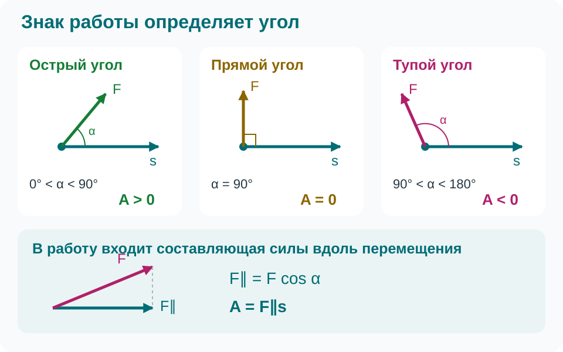
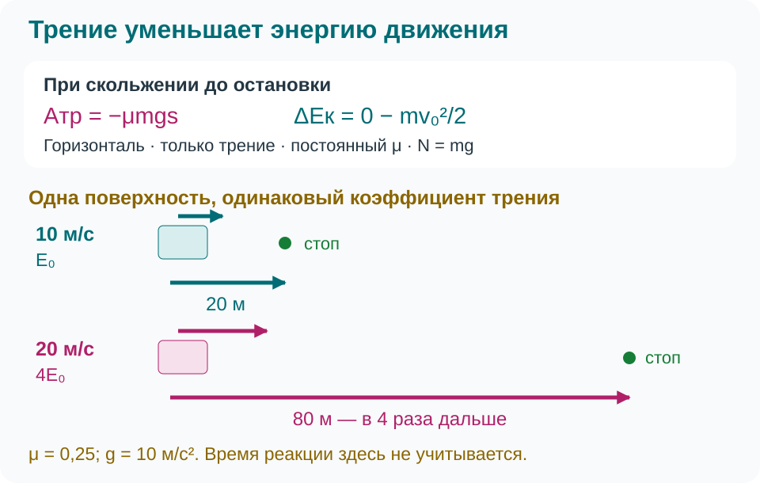

Работа и мощность силы. Кинетическая энергия
Импульс силы связывает изменение движения со временем её действия. Работа силы связывает изменение энергии с перемещением точки её приложения.
Работа и её знак
Для постоянной силы работа равна произведению модуля силы, модуля перемещения и косинуса угла между ними:
Здесь \(s=|\Delta\vec r|\) — модуль перемещения; путь равен ему при прямолинейном движении без разворота. Работу определяет только составляющая силы вдоль перемещения. Каждая сила совершает свою работу: тяга, трение, тяжесть. Работа — скаляр, единица СИ — джоуль: \(1\ \text{Дж}=1\ \text{Н}\cdot\text{м}=1\ \text{кг}\cdot\text{м}^2/\text{с}^2\).


| Угол между силой и перемещением | Знак работы |
|---|---|
| \(0^\circ\leqslant\alpha<90^\circ\) | \(A>0\); при \(0^\circ\) работа \(Fs\) |
| \(\alpha=90^\circ\) | \(A=0\) |
| \(90^\circ<\alpha\leqslant180^\circ\) | \(A<0\); при \(180^\circ\) работа \(-Fs\) |
Если перемещения нет, работа равна нулю: рука над неподвижной сумкой механической работы не совершает, хотя организм расходует энергию. При равномерном движении по окружности направленная к центру сила перпендикулярна мгновенной скорости и малому перемещению; её работа нулевая, модуль скорости не меняется.
Несколько сил и переменная сила
Работа равнодействующей для материальной точки равна алгебраической сумме работ: \(A_{\text{рез}}=A_1+A_2+\ldots\). Тяга может совершать положительную работу, а сумма оказаться отрицательной из-за большего сопротивления.
При переменной силе или искривлённой траектории можно разбить движение на малые участки и сложить работы на них. Для прямолинейного движения вдоль \(x\) работа — площадь между графиком \(F_x(x)\) и осью координаты с учётом знака: выше оси вклад положительный, ниже — отрицательный. Для постоянной силы это прямоугольник, для линейного роста от нуля — треугольник. Умножать конечное значение переменной силы на весь путь нельзя.
Мощность: как быстро совершается работа
Средняя мощность — работа за единицу времени, а мгновенная мощность силы зависит от скорости точки её приложения:
Единица мощности — ватт: \(1\ \text{Вт}=1\ \text{Дж/с}\), \(1\ \text{кВт}=1000\ \text{Вт}\). В мгновенной формуле угол берётся между силой и скоростью: сонаправленная сила даёт \(P=Fv\), противоположная — отрицательную мощность, перпендикулярная — нулевую. Подставлять средние силу и скорость вместо мгновенных в общем случае нельзя.
Кинетическая энергия и работа всех сил
Кинетическая энергия материальной точки — энергия движения. При скоростях намного меньше скорости света:
Это неотрицательный скаляр, измеряемый в джоулях. Удвоение скорости увеличивает энергию вчетверо. Одинаковые тела с противоположными скоростями равного модуля имеют одинаковую энергию, но разные импульсы. Энергия зависит от системы отсчёта; все скорости в задаче задают в одной системе, далее — инерциальной.
Для прямолинейного равноускоренного движения тела постоянной массы \(v_2^2-v_1^2=2a_xs\) и \(F_{\text{рез},x}=ma_x\). Поэтому:
Связь справедлива и при более общем движении материальной точки, если работу вычислять по всей траектории:
Торможение: почему важен квадрат скорости


Как решать задачи
Выберите тело, инерциальную систему отсчёта и два состояния. Нарисуйте силы и перемещение, определите знак работы каждой силы. Приравняйте сумму работ разности энергий, найдите неизвестное и проверьте единицы. Помните: работа \(A=Fs\cos\alpha\) связана с перемещением, импульс силы \(\vec I=\vec F\Delta t\) — со временем.
Вопросы для самопроверки
Почему неподвижная сумка не получает механической работы от руки? Почему натяжение совершает работу при равномерном подъёме, хотя энергия движения не меняется? Может ли измениться импульс при неизменной кинетической энергии? Объясните на примере движения по окружности.
Задачи для самостоятельной работы
При необходимости примите \(g=10\ \text{м/с}^2\). Скорости заданы относительно Земли, которую считаем инерциальной системой отсчёта.
- Сила \(40\ \text{Н}\) перемещает тело на \(5\ \text{м}\). Найдите работу при углах \(0^\circ\), \(60^\circ\), \(90^\circ\) и \(180^\circ\) между силой и перемещением. Объясните знаки результатов.
- При прямолинейном перемещении от \(x=0\) до \(x=4\ \text{м}\) проекция силы линейно возрастает от нуля до \(30\ \text{Н}\). Постройте график \(F_x(x)\) и определите работу.
- Подъёмник равномерно поднимает груз \(80\ \text{кг}\) на \(5\ \text{м}\) за \(20\ \text{с}\). Сопротивлением воздуха пренебрегите. Найдите работу и среднюю мощность силы натяжения; проверьте мощность через силу и скорость. Чему равна сумма работ всех сил?
- Тележка \(3\ \text{кг}\) движется со скоростью \(2\ \text{м/с}\). На участке \(5\ \text{м}\) тяга совершает работу \(60\ \text{Дж}\), сопротивление — \(-12\ \text{Дж}\), остальные силы работы не совершают. Найдите конечную скорость.
- Брусок скользит по горизонтали с начальной скоростью \(8\ \text{м/с}\) и останавливается через \(16\ \text{м}\). Горизонтально действует только трение, вертикально — тяжесть и реакция опоры. Найдите коэффициент трения и определите, во сколько раз изменится путь остановки при удвоении начальной скорости в той же модели.
Домашнее задание: §40–42. Повторите определения работы, мощности и кинетической энергии; научитесь определять знак работы каждой силы.